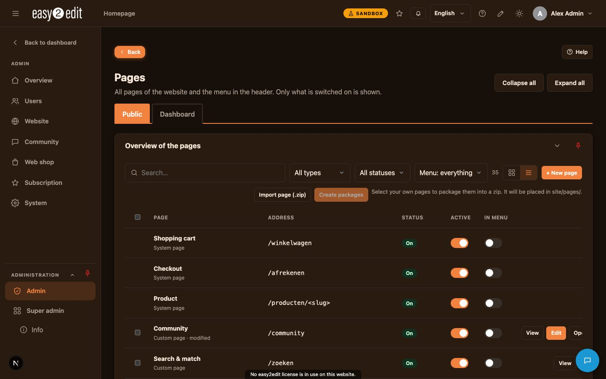
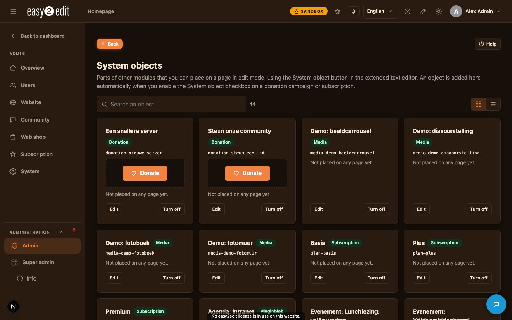
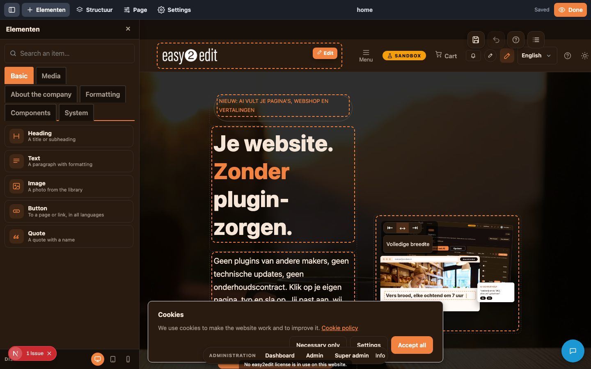
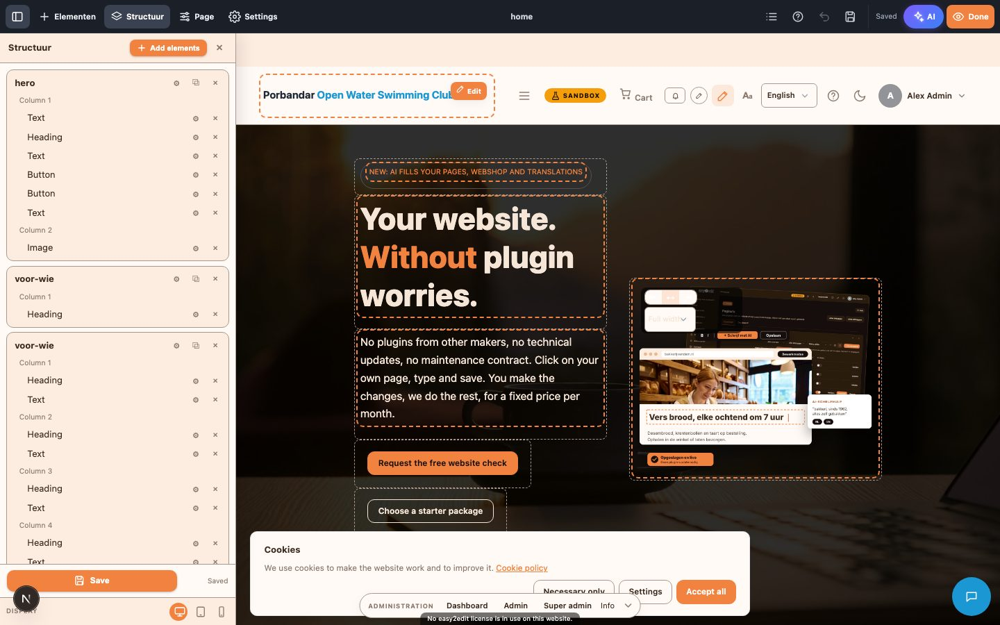
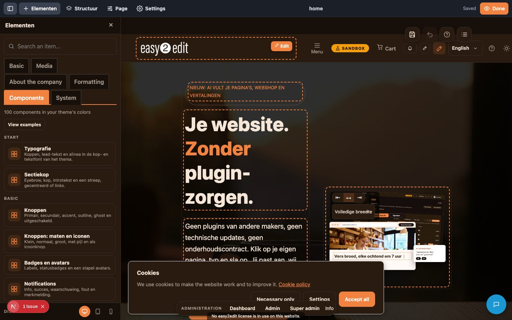

3. Pages, menu and edit mode
This chapter explains how pages are organised in easy2edit, how the menu works, and how to build and edit page content using edit mode and the page editor.
Video: Pages and edit mode (English voice-over also in Nederlands)

Pages overview#
Go to Admin > Pages to see all the pages on your site. There are several kinds of pages:
- System pages, such as Home or products, which belong to the system itself.
- Own pages: text pages that live at /p/<key>.
- Links and menu items, which point elsewhere or organise the menu.
For each page you can set:
- Names per language, with AI translation available to fill in all languages at once.
- The address per language.
- Who may see the page: everybody, logged-in users, guests, or specific users or groups.
- Whether it shows in the header menu.
- Whether it opens in a new tab.
- Which devices it appears on: desktop, tablet or mobile.
- A page-specific theme, header or footer.
- SEO settings per language.
- A background, which can be an image or a video.

Switching on edit mode#
To start editing a page, switch on the pencil icon in the header. This puts the page into edit mode, where you can add, move and change content directly on the page.
Pages are built from rows, also called blocks. Each row has cells, with one to four columns, and each cell holds items such as headings, text, images, buttons and more.

Row and cell settings#
Click the gear icon in the corner of a row to adjust:
- Background colour, image or video, with an optional overlay.
- Padding and width (column, wide, or full screen).
- Hero height.
- Text colour.
- Rounded corners.
- Space above the row.
Cell settings let you control width, alignment and card style, including background, border, radius and shadow.
Text items have their own settings: style, size, colour, font, padding and background (shown as a label or pill). Buttons can be set per language for their label, link, style (primary, outline or ghost), colours, size and icon.

Items you can add#
Within a cell you can add:
- Heading, text (rich text), image, button, spacer and line.
- System objects (see below).
- Ready-made parts: contact data, social media, map, video, quote, figures, logo and opening hours.
- The HTML / CSS code part.

The HTML / CSS code part#
This part opens in a large pop-up with three tabs: Visual, HTML and CSS. In the Visual tab you click directly into the text and type what you see is what you get, using a toolbar with bold, italic, underline, list, link and clear formatting. You can also switch between a light and dark background for editing. The code runs in a sandboxed frame and has no rights on the rest of the site.
System objects#
System objects include donation buttons, subscriptions, media views, plugin parts and, for superadmins, AI dashboard blocks. The relevant module must be switched on in Admin > System objects. In edit mode, add them through + Add > System objects.
Pages imported from HTML#
If a page was taken over 1 to 1 from an HTML file during site import, every text and button shows a pencil in edit mode. Click the pencil to open an editor that displays the text as it appears on the page, with bold, italic, underline and link options, plus the button's link if applicable. Click Save to write your changes back into the page.
The page editor#
The page editor works like a page builder, with a bar on top and a panel on the left, next to the page itself.
The top bar has:
- Elements, Structure, Page and Settings tabs.
- The name of the page.
- A Saved indicator, since every change is saved at once.
- The Done button.
The left panel can be collapsed to a narrow strip, which stays visible so you can reopen it, and can be dragged wider or narrower.
### Elements tab
Elements are grouped into Basic (heading, text, image, button, quote), Media (logo, map, video, and the Media library as an unfolding button), About the company, Layout, Components (searchable, from your component set) and System (system objects grouped per module or plugin).
Click an element to add it at the bottom of the chosen column, or drag it onto the page. You can drop it into a column, before or after another part, or onto the line between two blocks to start a new block. While dragging, the lines between blocks and columns highlight to show where the element will land.
### Structure tab
Shows the list of blocks and columns, with Up and Down controls to reorder them.
### Page tab
Shows the settings for the whole page: names per language, address, SEO, background, width and items per page.
### Settings tab
Shows the settings for whatever you have selected on the page: a text or heading (style, size, colour, font, space), an image (alignment, size, opacity, rounded corners, zoom, shadow and mouse-over effect), a button, a part, the header or the footer.
Editing parts directly on the page#
When you hover over a part, a pencil and a cross appear at its top right corner, in that order. The pencil opens it for editing in the panel, the cross deletes it.
- A column has its own pencil and cross at its top right corner. The cross empties the column; an empty column then disappears.
- A block or hero has its pencil and cross in its top right corner.
- Between two blocks is a thin line with three controls: + to add a new block (choose the structure, including hero options), a pencil to edit the block above, and a cross to delete it.
Display and other tools#
At the foot of the panel, Display lets you preview the page as it would look on computer, iPad or phone. The page next to the panel updates to that width and refreshes after every change.
The question mark at the top right switches on Help: point at any control to read what it does.
In every colour picker you can save your own colours with +, up to 16 per user, available on every computer you use. Change a saved colour with the pencil or remove it with the cross. Sliders and tabs follow your theme.
Menu settings#
Go to Admin > Pages > Menu to configure the header menu:
- Menu items can be shown in lower case or capitals.
- Set the font size.
- Decide when the menu becomes a hamburger menu: when it does not fit, below a certain width, when there are more than a set number of items, or always.
A live example shows your settings as you adjust them.
Using the AI button in the page editor#
The AI button in the top bar of the page editor improves the page as a whole, adjusting space, alignment, sizes, colours and hero height.
Changes are shown as css and html differences, with old code in red and new code in green, alongside a progress bar and a live counter of the AI cost.
The AI panel has these tabs:
- Instruction, where you describe what you want.
- Page, showing the current page.
- Photos and videos, with suggestions and search terms.
- Stock, offering free Pexels and Unsplash photos and Pexels videos; click Use to place one into the page.
Every AI action counts as a single undo step. Undo it with the arrow at the top right or with Ctrl/Cmd+Z.
To use the AI button, Claude must be linked to your site. The Stock tab additionally needs Pexels or Unsplash linked.